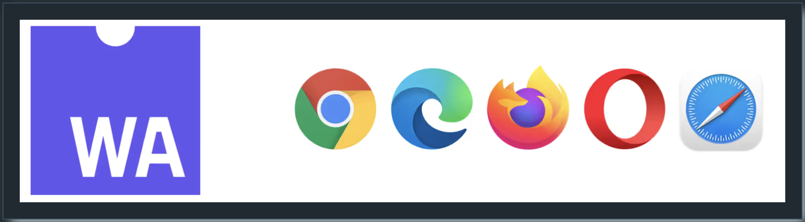

Ch. 1 : WASM이란?
WebAssembly란 무엇인가?
WebAssembly(또는 Wasm)은 다양한 소스 언어에서 포터블 바이너리 실행 파일을 생성할 수 있게 하는 이진 명령어 형식을 정의하는 개방 표준입니다.

이 바이너리는 다양한 환경에서 실행할 수 있습니다. 웹에서 유래했으며 모든 주요 브라우저에서 지원합니다.
왜 웹 어셈블리인가?
2023년을 WebAssembly(Wasm)의 해로 예상했으며, 이는 여러 표준의 진전과 다양한 언어의 지원 확대로 실현됨
Python과 Ruby는 Wasm 지원을 포함시켰고, 공식 Go 프로젝트도 Wasm 및 WebAssembly System Interface(WASI)를 지원할 예정
첫 Wasm I/O 컨퍼런스와 WasmCon이 개최되었으며, GlueCon과 DockerCon에서도 WebAssembly 트랙이 마련됨
Suborbital이 F5에 인수되고 Adobe가 Figma를 인수하려 했으나 규제로 인해 실패한 사건은 Wasm을 선도하는 기업들의 시장 가치를 입증함
- Wasm은 AI의 완벽한 파트너
Wasm의 플랫폼 중립성, 빠른 시작 시간, 이식성 및 작은 바이너리 크기는 AI 애플리케이션에 이상적임 2024년 AI의 주요 테마 중 하나는 효율성이며, Wasm은 이 분야에서 큰 이점을 제공할 것
- 세 가지 주요 표준이 완성됨
Wasm은 W3C의 감독하에 표준화되었으며, 핵심 Wasm 표준은 몇 년 전에 완성됨 WASI, 메모리 관리, 컴포넌트 모델 등 세 가지 추가 표준이 Wasm의 성공에 중요함 2023년에 이 표준들은 큰 발전을 이루었으며, 2024년에는 모두 완성될 것으로 예상됨
- Wasm의 본거지는 서버 사이드
Wasm은 원래 브라우저에서 실행되도록 작성되었지만, 현재는 서버 사이드에서 더 많은 동력을 얻고 있음 서버리스 함수가 강점으로 부상했으며, 이는 확실히 성장하고 있음 Wasm은 Kubernetes 생태계에서 중요한 진전을 이룰 것으로 예상되며, 효율성, 확장성, 비용이 중요한 곳에서 등장할 것
- 클라이언트/서버 양쪽에서 Wasm에 의한 점진적 개선
웹 개발 프레임워크의 부상으로 클라이언트 측, 서버 측 또는 둘 다에서 선택적으로 실행할 수 있는 애플리케이션이 등장 이러한 애플리케이션은 클라이언트 측 렌더링(CSR)과 서버 측 렌더링(SSR)으로 구축될 수 있으며, 일부 프레임워크는 이미 Wasm을 활용하고 있음 2024년에는 이러한 프로젝트가 더 많이 등장할 것이며, Wasm의 강점인 어디에서나 실행 가능한 바이너리 형식을 더욱 활용할 것으로 보임